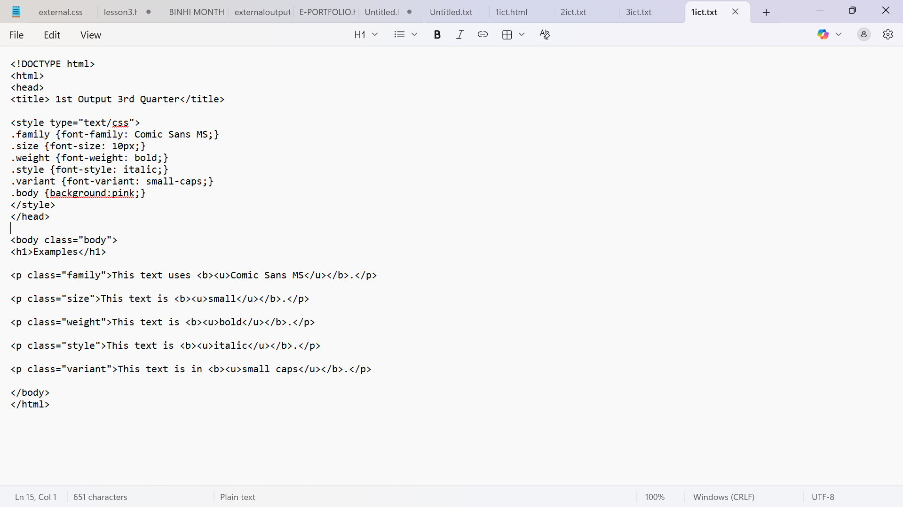
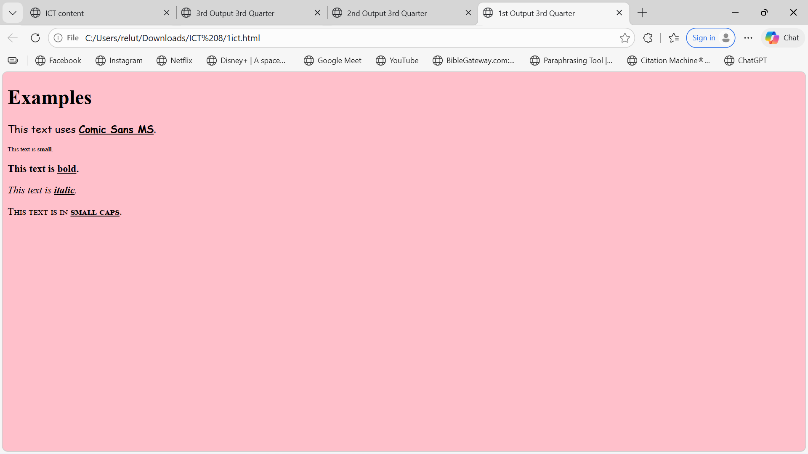
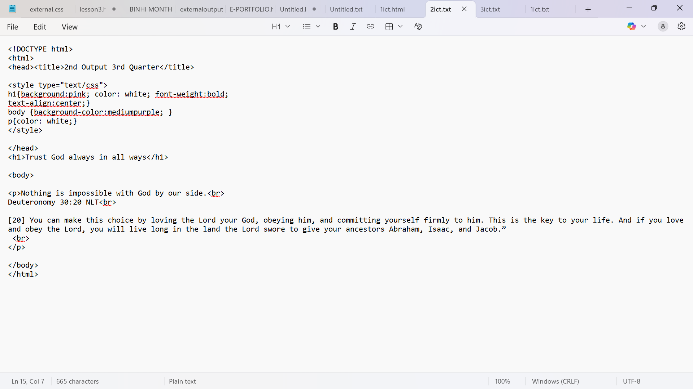
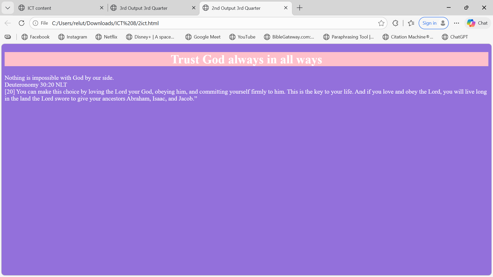
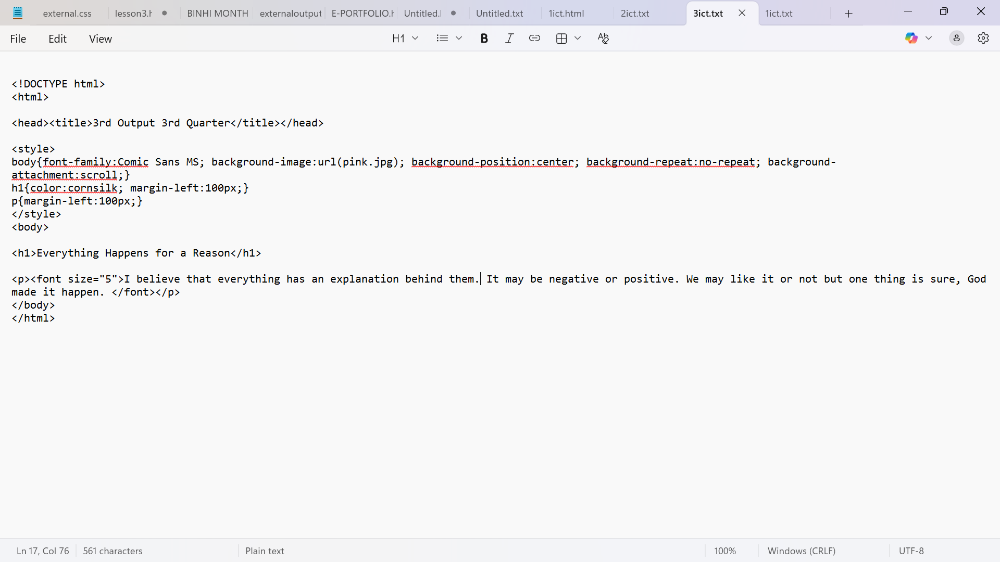
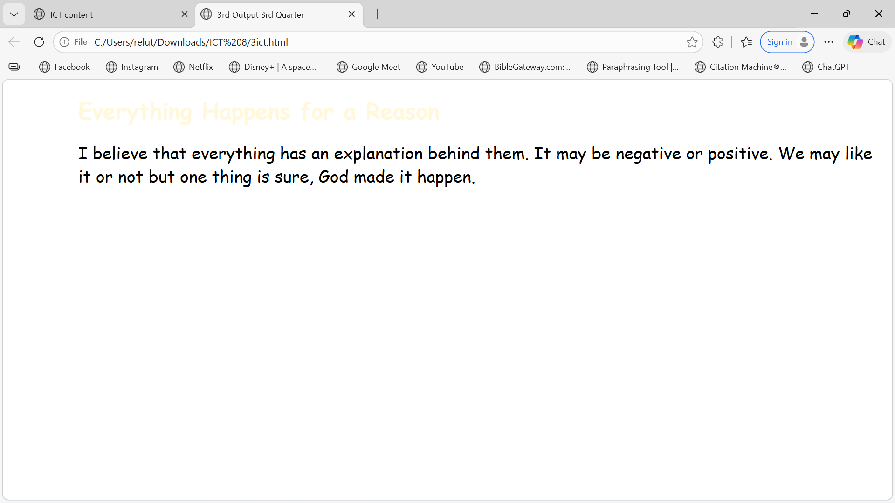

Hyperlink/s
• is a reference link that allows you to navigate to another page of the same document or to another document
• any navigational element of a web page
• may be represented by a colored text with an underline or with an image
• are enclosed between < a >< /a > anchor tags which will specify the target URL to an href (hyperlink reference) attribute in the opening tag
Each web page hyperlink is sensitive to three interactive states
• Hover – gaining focus, the cursor is placed over the hyperlink
• Active – retrieving the linked resource, the user clicks the hyperlink
• Visited – the linked resource has previously been retrieved
Three Types of Hyperlinks
• Absolute URL – links to a page on a different web server
• Relative URL – links to a page on the same web server
• Named anchor – links to a different location on the same web page.
Note: A link does not have to be text, it can be an image or any other HTML element.
Web server
is a software and hardware combination that processes requests and delivers web content, like webpages, images, and videos, to users over the internet.
Anchor
term used to define a hyperlink.
Creating a Link from one page to another
• We will now learn how to create anchors that allow viewers to go to another Web page or file.
• Anchors can also be made to make email hyperlinks.
• Hyperlinks are clicked in order for viewers to jump to a page specified in it.
• Anchors can be made thru the container tag and setting the value of the attribute href as the target destination page.
anchor - Most important attribute and part that is visible to the reader
Attributes
1. href
Indicates the target of the anchor. Indicates the link’s destination.
2. target
Indicates the behavior the Web browser will carry out.
Default appearance of links
By default, links will appear as follows in all browsers:
An unvisited link is underlined and blue
A visited link is underlined and purple
An active link is underlined and red
Target Attribute
Target attribute indicates what the Web browser will do when the hyperlink is clicked.
• blank – the value of the href attribute or target URL will be opened in a new window.
• _self – the value of the href attribute or target URL will be opened within the same frame.
• _parent – the value of the href attribute or target URL will be opened in the parent frameset.
• _top – the value of the href attribute or target URL will be opened in the full body of the window.
Accessing links via keys
• Pointer – a mouse or similar device places a screen pointer over a hyperlink, then the user clicks to access its target.
• Tab – repeatedly hit the Tab key to successively focus on each hyperlink in turn, then hit Return to access the target of the currently selected hyperlink.
• Access key – hit a designated character key to focus on a particular hyperlink, then hit Return to access the target.
3. name
Assigns a name to the anchor defining an internal bookmark of the page.
Target attribute
Target attribute – defines where the linked document will be opened.
Cursor behavior
In most graphical browsers, when the cursor hovers over a link, it typically changes into a hand with a stretched index finger, and the title appears some way (varies according to browser).
The name attribute
When the name attribute is used, the element defines a named anchor inside a HTML document.
Named anchors are not displayed in any special way. They are invisible to the reader.
The # in the href attribute defines a link to a named anchor.
Creating an Email Link
• email links allow users to send email and communicate with you easily
• an email hyperlink opens the Create New Email Message of the MS Outlook Express (or the default mail client) and sets the message to be sent to the specified email address
• you can make your own email hyperlink by setting the value of the attribute href as mailto: followed by the email address
Linking to a Page on a Different Web site
• To link to a page on a different web site, you have to find first the destination file path and then copy it to your code to create a link.
HTML Links
There are two valid types of links in HTML, depending on the page your web browser is trying to access:
External and Internal.
External link – a link to a file or to a webpage that does not belong to the webpage’s own site.
Internal link – a link to a file or a webpage within the webpage’s own site, or to any part of the webpage itself.
In addition, a dead link to a webpage or file does not exist. Clicking on this kind of link results in a webpage that displays such messages as “Error: File not found” or “The page could not be displayed”.
Only one tag, the anchor tag, is used to describe links.
Using Gifs as Links
Graphics or images can be used to take you to another page in your website or to another website.
< a href="https://address of page" >
< img src=".jpg" >< /a >
Using Graphics as Links
Graphics or images can be used to take you to another page in your website or to another website.
< a href="https://address of page" >
< img src=".gif" >< /a >
HTML 5 INPUT TYPES and FORMS
HTML 5 features input controls and validation that are enhanced than the previous versions. The tag < input > is used to declare an input control. The matrix on the next slide shows only HTML input control that are supported by either of these browsers.
FORMS
• Form allows you to gather feedback from your readers or visitors and work on the data to provide better service.
• The areas in the form are called fields, text fields or text boxes.
• Forms also contains command buttons such as Send or Reset button.
• Standard controls such as check buttons or radio buttons and list boxes can be seen.
Forms present a variety of means for users to key in information:
• Textboxes
• Password boxes
• Radio buttons
• Check boxes
• Dropdown menus
• Text areas
• Submit buttons
• Reset or Clear buttons
• A form has two attributes:
the action and the method
Action attribute – responsible for indicating where the information will be passed whether it is to another Web page or to a script.
Method attribute – responsible for indicating the way for sending the information.
• Get method of sending information appends the data into the URL.
The get method is just basically for retrieving data whereas the post method may update or store data.
Attributes
1. action
Indicates where the information will be submitted.
Values:
filename (path could be included), URL
2. method
Indicates the method of submitting the information.
Values:
post, get
Creating a Form
The container tag < form > is used to create a form.
Note: A form contains input elements like text fields, check boxes, radio buttons, submit buttons and others. A form also contains select lists, text area and others.
Form Elements
Form elements are responsible for functionality of the web pages.
< datalist >
Declares a list of pre-defined options for input controls.
< keygen >
Identifies a key-pair generator field (for forms)
< output >
Generates the result of a calculation.
Data List Element
The data list element identifies a list of pre-defined choices for an input. It is used to offer an auto complete feature on input elements.
Keygen Element
The keygen element < keygen > declares a key-pair generator field in a form.
It was developed for the purpose of security through validation of users.
Upon form submission, two keys are produced, a private and a public.
The private key is locally saved while the public key is transmitted to the server.
The public key could be used to generate a client certificate to authenticate the user in the future.
Output Element
The output element, represented by the tag
INPUT TYPE TAGS
HTML 5 features input controls and validation that were enhanced. The tag < input > is used to declare an input control.
color
Selects color from a color picker.
date
Defines a date control.
email
Defines a field for an email address.
month
Defines a month and year control.
datetime
Allows you to select a date and time.
number
Defines a numeric field.
range
Defines a control for entering a number whose exact value is not important.
search
Defines a search field.
time
Allows the user to select a time.
url
Used for input fields that should contain a URL address.
tel
Defines a field for entering a telephone number.
Form and Input Attributes
New attributes of forms, as well as inputs in HTML 5 would make filling out forms and data in the Web a lot easier. Note that in this lesson, the processing upon submission is already beyond HTML5 (usually done in ASP and PHP).
ASP - Active Server Pages or Application Service Provider.
Active Server Pages is a Microsoft technology for building dynamic web pages, while Application Service Provider is a business model where companies offer software applications over the internet.
PHP
PHP is a widely-used, open-source scripting language primarily for web development. It's known for its ability to generate dynamic content on web pages and is often embedded within HTML. PHP originally stood for "Personal Home Page," but now the acronym is recursive, standing for "PHP: Hypertext Preprocessor".
Autocomplete and No Validation
Autocomplete
Autocomplete is applicable both on form and input. When it is turned on, the browser automatically completes values based on user’s previous inputs. The specific input tags can have their separate autocomplete — either on or off.
Novalidate
Novalidate is the attribute that expresses that the input need not be verified in terms of format.
Input Attributes
autofocus
Cursor appears at the assigned textbox.
formaction
Indicates the URL that will process the input once submitted.
formenctype
Declares the manner of encoding of form-data upon submitting.
formmethod
Specifies the HTTP method of transmission of form-data to the action URL.
HTTP (Hypertext Transfer Protocol)
HTTP is a fundamental protocol for transmitting information over the internet. It acts as a set of rules that govern how web browsers and servers communicate, enabling users to access and interact with websites.
formnovalidate
Same function with the novalidate attribute.
Input Attribute
formtarget
Denotes a name or a keyword indicating the display location of the response received during form submission.
height & width
Exclusive in input type image; sets image size.
multiple
Allows more than one entry.
pattern
Standard value of comparison with respect to the input value; usually applied to text, search, email addresses and passwords.
placeholder
Provides a short clue on the expected value of an input.
required
Declares that the certain input is filled out with information before submission.
Note:
Can be used along with type="submit" and type="image".
INPUT ELEMENT
The input element of form defined by the empty tag < input > is used for making textboxes, password boxes, check boxes, radio buttons, submit buttons and reset buttons depending on the value of the type attribute which can be:
text
password
checkbox
radio
submit
reset
Attributes for < input >
name
Assigns a name to the input field. The name can be used for various purposes and is required in most circumstances.
Values:
Any text (without spaces)
type
Indicates the type of input field.
Values:
text, password, checkbox, radio, submit, reset
size
Indicates the size of the input field.
Values:
Any number
value
Indicates the initial value of the input field. Indicates the label for the submit and reset buttons.
Values:
Any text
checked
Indicates if by default, the input field (radio button or check box) is selected.
Values:
None
The checked attribute needs no value. It just needs to be present in the tag in order for it to provide its effect.
Creating a Textbox
Textboxes are single line text input boxes. Usually, text boxes are used for username input and other single line texts such as names, email addresses and others.
Textbox can be made by keying in text as the value of the type attribute of < input >.
Additionally, you can use the value attribute to set an initial text input. The size attribute then indicates the length of the textbox.
Creating a Large Text Area
You can create an input field that can span several rows and columns to allow the readers to enter their feedback, requests, instructions, opinions or any communication.
Text areas are made via the container tag:
< textarea >< /textarea >
The content of this tag will be displayed in the text area by default.
Creating Radio Buttons
Radio buttons provide the users a variety of choices where only one can be selected.
Radio buttons can be made by keying in radio as the value of the type attribute < input >.
In a set of radio buttons, only one can be chosen; the name attribute is also to indicate which set that radio button belongs.
Radio buttons of the same group have similar values for their name attribute.
The checked attribute is applicable for radio buttons to indicate a default selected option.
Radio buttons are usually used when the choices are only few.
Creating Check Boxes
Unlike radio buttons, check boxes offer users a variety of choices where none, only one or many may be selected.
Check boxes can be made by keying in checkbox as the value of the type attribute of < input >.
The checked attribute is applicable for check boxes to indicate default selected options.
Creating Drop-down Menus
Like radio buttons, drop-down lists or drop-down menus offer users a variety of choices where only one can be selected.
Drop-down menus are made via container tag:
< select >< /select >
Attributes
name
Assigns a name to the dropdown menu. The name can be used for various purposes and is required in most circumstances.
Values:
Any text (without spaces)
size
Indicates the number of visible items (lines).
Values:
Any number
< option > Tag
Individual items in drop-down menus are defined by the container tag:
< option >< /option >
The content of the tag will be the item in the menu.
Attributes
value
Assigns a name to the dropdown menu item. The name can be used for various purposes and is required in most circumstances.
Values:
Any text (without spaces)
selected
Indicates if by default, the item is selected.
Values:
None
The selected attribute is used in dropdown menus to indicate a default selected option.
Creating an Email Feedback Form
• Feedback form allows communication with your web site’s visitors.
• Visitors can submit questions and comments which will then be forwarded to your email address.
Attributes
action=“mailto:emailaddress”
Sends the form results to your email address
method=“get”
Sends them as one request to the mail program.
enctype=“text/plain”
Makes the results readable in your email box.
Adding a Submit Button
• A submit button is usually placed at the end of forms and when clicked, submits the information input. It can be made by keying in submit as the value of the type attribute of < input >.
< input type=“reset” >
Likewise, the value of the value attribute indicates the label on the button.
Adding a File
• File allows your website visitor to send files in your web server. File can be made by keying file as the value of the type attribute of while the accept attribute specifies the types of files that the server accepts (that can be submitted through a file upload).
Note: The accept attribute can only be used with < input type=“file” >.
file_extension
A file extension starting with the character, ex. .gif, .jpg, .png, .doc
audio/*
All sound files are accepted.
video/*
All video files are accepted.
image/*
All image files are accepted.
media_type
A valid media type, with no parameters.
What is CSS?
• CSS stands for Cascading Style Sheets
• CSS describes how HTML elements are to be displayed on screen, paper, or in other media.
• CSS saves a lot of work. It can control the layout of multiple web pages all at once.
• External stylesheets are stored in CSS files.
• CSS is the language we use to style a Web page.
• CSS separates content from design, making websites easier to maintain and more attractive.
Why use CSS?
• CSS is used to define styles for your web pages, including the design, layout and variations in display for different devices and screen sizes.
• Provides consistency across web pages.
• Saves time: one CSS file can control multiple pages.
• Improves accessibility and responsiveness.
• Enhances design with layout, colors, and animations.
The layers of a webpage:
- Behavior Layer
- Presentation Layer
- Content Layer
Each layer of the webpage has its specific use or function in the web page. Each plays an important role to be able to attain the goal or objective of a particular website.
Content Layer
The content layer is where you:
• define and layout the text, images, animation, sound, video and everything you want to put in a web page with the use of tags
• is the underlying HTML code of that page. Just as a house's frame creates a strong foundation upon which the rest of the house is built, a solid foundation of HTML creates a platform upon which a website can be created.
Content Layer needs to have:
• Text that is easy to understand.
• Text that makes sense without a visual representation (wrong example: “click on the links below”).
• Alternative text for every image, sound piece or video that is content.
• Text that is fit for the web (KISS (keep it short and simple), structured into headers, paragraphs and lists).
Content Layer needs to have:
• Explanations of Acronyms and Abbreviations.
• Content images need to be unambiguous for the colorblind and text in images needs to have a sufficient size and contrast.
• Information to the users of changes necessary to her environment (example: “opens in a new window” or “PDF document, 182kb”).
Presentation Layer
The presentation layer is where you can define how people see your web page in a browser.
Presentation Layer needs to:
• ensure that text can be zoomed without making the site unusable.
• ensure that the interactive elements of the site are easy to find.
• ensure that images and foreground and background have enough contrast and are unambiguous to the colorblind.
Presentation Layer needs to:
• give the site a consistent navigation.
• aid the user through business processes.
• separate content into easily understandable units.
Behavior Layer
The behavior layer is where you have a real-time user interaction with the web page. The interaction may be a simple validation of input or filling out a form or even as big as web-based programs.
Behavior Layer needs to:
• ensure that all the functionality is available to the user regardless of input device.
• make the user experience as easy as possible by cutting down on options until they are necessary.
In comparison, HTML is used to create the actual content/foundation of the page and CSS is responsible for the design or style of the website, including the layout, visual effects and background color.
Benefits of using CSS
- CSS saves a lot of work.
- You do not have to code the CSS repeatedly into an HTML file. You just need to write the CSS code once and then reuse the same stylesheet in multiple HTML pages. This saves coding time and space of your hard disk.
- Easy maintenance
- You can control the look and layout of several HTML pages at once.
- Adding style to webpage makes it more pleasing to the eye.
- Improve the appearance of a website by allowing you to create a much more stylish website since CSS offers a wide array of expressive style capableness.
Capabilities of CSS
- CSS makes your pages easily updateable. CSS makes it possible to update the layout of the entire page quickly. You can specify a style once and you can apply it as many times in your document.
- Position objects on the page. CSS gives you control when placing objects on the page exactly where you want them.
- Layer objects on the page. CSS allows you to position objects in three dimensions.
- Create custom tags. CSS allows you to create custom tags to achieve specialized objectives.
Advantages of using CSS
- Save typing and development time because you have to enter CSS code only once and it can be applied to many HTML scripts.
- Download faster because your browser will download only one file once.
- Faster page loading.
- You can also have multiple link tags in one document.
- Better design flexibility.
- Easier to maintain and update.
- Separation of structure (HTML) and style (CSS).
What will we use in CSS?
• Curly braces { }
• Colons :
• Semi Colons ;
• Selectors
• Declarations
Structure of CSS
Selector – the HTML element you want to style; is a pattern used to "find" or "select" the HTML elements on a webpage to which a set of CSS rules will be applied.
Property – the style attribute you want to modify; is a named characteristic or attribute that defines a specific aspect of how an HTML element should be displayed or rendered by the browser.
Value – the weight of the attribute you want to apply to the element property; is the specific setting assigned to a CSS property.
Declaration – is a single instruction that defines a specific style for an element.
Declaration block – fundamental part of a CSS rule. It is a block of code that contains one or more CSS declarations which define the styling rules for the selected HTML elements.
The Style Sheet and its Parts
A set of instructions to a Web browser on how to display various elements on a Web page is known as style sheet.
Every CSS (whether it is contained in a .css file, or embedded in the head element of an HTML document) is a series of instructions called statements.
The statement does two things
• It identifies the elements in an HTML document that it affects.
• It tells the browser how to draw these elements.
Elements are considered to be paragraphs, links, list items, and so on.
How Do Style Sheet Work?
Style sheets are just text files, or text embedded in the head of an HTML document, that help separate content from appearance.
The content of the page goes into an HTML file.
The appearance goes into a style sheet.
Two things to remember when using CSS code
1. The type attribute should always be
< style type="text/css" >
2. CSS code should be enclosed in HTML comments < !-- -- > so that browsers that do not understand CSS will ignore the code.
Three Kinds of CSS
External Style Sheets
• most global of the three kinds of CSS
• apply the same style to unlimited pages
• consistent design across pages
• changing one file updates the entire site
• file extension is .css
Embedded Style Sheets (Internal)
• used for document-wide style rule
• placed inside the `
Display Property
CSS display property allows you to control how an element is displayed.
Kinds of Elements in CSS
Block level elements
Laid out vertically.
Examples:
• < p >
• < ol >, < ul >, < dl >
• headings
• < article >, < section >, < div >
Block elements start on a new line and take full width.
Inline level elements
Displayed in a line.
Examples:
• < a >
• < strong >, < em >, < b >, < I >, < q >, < mark >
• < span >
Inline elements do not start a new line.
Important rule:
Inline elements cannot contain block elements.
Display Property Values
display: inline → horizontal layout
display: block → vertical layout
display: list-item → display as list item
display: none → hidden element
display: inherit → inherit parent value
Div Tag
Div divides webpage content into sections.
• block level element
• adds structure
• usually used for large sections
• adds spacing before and after
Span Tag
Span adds structure within a line.
• inline element
• used for emphasizing words in a paragraph
Span vs Div
Span → small inline section
Div → larger block section
Both do not have default styling and rely on CSS.
CSS Rule
A CSS rule has two main parts:
• selector
• style declarations
Style Properties
1. Fonts
2. Colors and backgrounds
3. Text
4. Boxes and layout
5. Lists
6. Tag classifications
Classes
Class is a user-defined selector.
It allows applying styles to specific HTML elements.
Classes are reusable style definitions.
Classes start with a dot.
Example:
p.golden {color:blue;}
.sodapop {color:red;}
Rules about Classes
• one element can have multiple classes
• one class can be applied to many elements
• classes maintain consistency with flexibility
Element + Class Selector
Example:
p.note {color:blue;}
This applies style only to paragraph elements with class "note".
Class Selector
.classname
Applies to any element with that class.
Grouping Selectors
Selectors can be grouped using commas.
Example:
h1,p {color:blue;}
This applies the same style to both elements.
CSS Selectors
CSS selectors are used to “find” or “select” the HTML elements that you want to style.
CSS selectors are divided into 6 types:
1. Class selector
2. Element selector or Tag selector
3. ID selector
4. Universal selector
5. Group selector
6. Attribute selector
Element Selector
• selects HTML elements (p, div, h1, etc.) and applies CSS to them.
Example CSS code:
p {line-height: 1.5; font-size: 16px;}
ID Selector
• is a style applied to one element in a page.
• normally used once, usually in a page title or the navigation part of the page
• defined by “#” and uses id attribute of the HTML element.
• ID selector selects the HTML element with a unique identifier (id) and adds CSS to it.
• it is not advisable to start an id selector with a number because some browsers do not support it.
• the ID selector is unique and selects one unique element.
Universal Selector
The universal selector selects every single HTML element on the page.
It is written using the asterisk (*) character.
Group Selector
The group selector allows you to select multiple elements and apply the same style to all of them.
Attribute Selector
The attribute selector selects elements based on specific attribute values.
The syntax for the attribute selector is:
Element[attribute]
When to use different selectors?
When to use class selector
Use a class selector when you want to apply the same style to multiple elements or when elements share a common category or purpose.
Use class when styling many elements that share the same style — even if they have different tags.
When to use ID selector
Use an ID selector when styling a unique element that appears only once on a page (like a header, footer, or main section).
When to use element/tag selector
Use an element selector to style all occurrences of a specific HTML tag (like all < p > or < h1 >).
When to use universal selector
Use the universal selector when you want to style all elements on the page, for example:
• resetting margins
• resetting padding
• setting box-sizing
When to use group selector
Use a group selector when different elements share the same styling to avoid repeating code.
When to use attribute selector
Use an attribute selector when you want to style elements based on their HTML attributes or attribute values.
Setting Dimensions
CSS can be used to manage dimensions such as visibility, width, or height of HTML elements.
Property for Dimensions
visibility
Indicates if an element is visible or hidden.
visibility: visible
• default value, the element is visible.
visibility: hidden
• The element is hidden but still takes up space.
visibility: collapse
• Only for table rows (< tr >), row groups (< tbody >), columns (< col >), column groups (< colgroup >), and flex items.
This value removes a row or column as if display:none were used.
If collapse is used on other elements, it renders as hidden.
Other Dimension Properties
Property Definition Example
width Indicates the width width:200px
height Indicates the height height:auto
line-height Indicates the line spacing line-height:12px
max-height Indicates the maximum height max-height:12px
min-height Indicates the minimum height min-height:12px
max-width Indicates the maximum width max-width:12px
min-width Indicates the minimum width min-width:12px
This CSS feature is a good way of controlling paragraphs, tables and other elements.
Height and Visibility
If collapse is used on other elements, it renders as hidden.
Pseudo-Classes and Links
Recall that classes are user-defined selectors used to control individual HTML element formatting.
Pseudo-classes are not user-defined and are defined by a colon (:).
Specific pseudo-classes can be used only on specific HTML elements.
Anchor Element Pseudo-Classes
The anchor (< a >) element has four pseudo-classes:
-link
-visited
-hover
-active
Each affects the behavior of hyperlinks.
Description of Pseudo-Classes
• :link – hyperlinks that have not yet been visited.
• :visited – visited hyperlinks.
• :hover – when the mouse pointer is over the link.
• :active – when the link is clicked.
Order of Pseudo-Classes
The order is important.
The correct order is:
LVHA
Link
Visited
Hover
Active
Pseudo-Class Properties
Property Syntax Description
:link a:link {…} Sets unvisited link characteristic
:visited a:visited {…} Sets visited link effect
:active a:active {…} Sets appearance when clicked
:hover a:hover {…} Sets appearance when hovered
:focus a:focus {…} Sets appearance when focused
Important reminder:
The hover property should be placed after the link property for it to function properly.
Pseudo-classes can also be used on any element on a web page.






Introduction to JavaScript
Purpose: To create dynamic, interactive user experiences, handling everything from UI rendering (like React for Facebook) and content loading to real-time updates, personalized feeds, video controls (captions, volume), and tracking user activity (Meta Pixel).
Websites Types
Static Website:
Sometimes called a flat page or a stationary page, it is a web page delivered to a browser exactly as stored (e.g., Photographer's portfolio).
Dynamic Website:
A type of website that displays different content and interacts with users based on their actions, preferences, or other variables (e.g., Social Media Platforms).
JavaScript (JS) Overview:
- It is the most popular and widely used scripting language on the internet and works in all major browsers.
- Developed by Brendan Eich of Netscape under the name Mocha, later renamed LiveScript.
- Opened to Internet Explorer in 1996.
- It is a trademark of Oracle Corporation, licensed to entities like Mozilla Foundation.
- It is client-side, high-level, interpreted, and object-oriented.
-Client-side:
Codes/formulas are processed on the user's computer.
High-level:
Codes are written in words close to English.
Interpreted:
Passed as source code and converted into machine code.
Capabilities of JS:
-Designed to add interactivity and functionality to websites, making contents more dynamic.
-Reacts to events (mouse clicks, pre-loading).
-Validates data (saving processing time compared to server-side scripting).
-Creates cookies (used to save/retrieve information or monitor visitor habits).
-Used by Google for real-time updates, YouTube for seamless streaming, and Facebook for real-time content updates.
Features:
-Supports structured programming syntax in C.
-Has dynamic typing; the variable type can change during run time.
-Runs locally, making interaction faster and more responsive.
-Can detect user actions HTML cannot do alone.
-Can be combined with CSS to produce DHTML (Dynamic HTML) for effects like message scrollers.
Characteristics:
Lightweight, inserted into HTML, supported by modern browsers, license-free, and easy to learn.
Disadvantages:
-Not supported by some browsers (e.g., older mobile phones).
-Security risks: Some browsers disable JS for safety; secrets in JS can be extracted by adversaries; malicious authors can deliver scripts to client computers.
-Source code is sent to the client and cannot be perfectly concealed; it can be reverse-engineered.
Basic Tools and Components:
-A script is a set of instructions connecting components for a task.
Tools needed: A text editor and a web browser.
-Basic components: Objects, methods, and properties.
< script > tags connote JS; the type attribute defines the version.
-document.write command is used to display output.
Script Placement and Guidelines
Script Placement:
-Execution can be controlled by placing scripts in different HTML sections.
-HEAD Section:
Scripts are pre-loaded and executed before events are triggered. Ideally used for function calls.
-BODY Section:
Scripts are executed when the page loads.
-HEAD & BODY:
You can use multiple script tags in both sections.
External JavaScript:
-Helpful for controlling multiple HTML files without rewriting code.
-Files are saved with a . js extension and linked using the src attribute
External JS files must not contain opening and closing script tags.
Comments:
-Used for explaining code or debugging.
-Single-line: Use two backslashes (//).
-Multi-line/Block: Start with /* and end with */
JavaScript Guidelines:
-Case Sensitive:
Naming is critical; Uppercase and lowercase are not equivalent.
-White Space:
JS ignores white space within a line of code, but using it between expressions makes code easier to read.
-Breaking up code lines:
Use a backslash (\) to break a line, but do not break in the middle of commands.
Characteristics of JS:
Interpreted Language:
Requires a browser to run and works with HTML.
Scripting Language:
Created for simple repetitive tasks; provides instructions to other programs rather than having its own interface.
Client-Side Scripting:
Executed on the user's machine rather than the server.
Object-Oriented Programming (OOP):
Treats system elements as objects with associated "methods" (functions).
Key Concepts:
Objects:
Items in the browser (e.g., window, page, status bar, date/time).
Methods:
Actions performed on or by an object.
Properties:
Existing subsections of an object.
Event:
Something that happens, like a page loading or a mouse click.
Parameter:
Data/objects describing an object's characteristics.
Type:
Category of variable (integer, string, Boolean, etc.).
Type conversion:
Converting a variable from one type to another.
Commonly Used Objects:
Window:
The main object. Includes location (new location), open (new window), and setTimeout (time intervals).
Document:
Derived from the window object; container for HTML objects.
Methods include fgColor, cookie, write, and lastModified.
Math:
Provides math operations like PI, pow(a,b), max(a,b), and min(a,b).
Navigator:
Determines the browser type. Properties include appName, appVersion, cookieEnabled, and platform.
Syntax Rules:
Parentheses () are called the "instance".
Parsing:
Analyzing data and converting it to a format the JS engine understands.
Events, Popup Boxes, and Variables
Events:
Actions triggered by mouse clicks, keyboard strokes, image loading, or form submission.
-Event Triggers:
onabort (loading interrupted), onblur (loses focus), onchange (content change), onclick (mouse click), onerror (load error), onload (finished loading), onmouseover/out (mouse movement), onsubmit (form submission).
-onload/onunload are used for browser checks or cookie handling.
-onsubmit calls validation functions; if the function returns 'true', the form is submitted; if 'false', it is cancelled.
Popup Boxes:
Alert Box:
Used for warnings/greetings.
User-Input Prompt Box:
Gathers data before a user enters a page. Returns encoded value if "ok" is clicked, or null if "cancel" is clicked. .
Confirm Box:
Verifies or accepts something. Returns true for "ok" and false for "cancel". Syntax: confirm(“message”);.
Variables:
Temporary storage for values and expressions.
Rules for Naming:
Must begin with a letter or underscore; no spaces or punctuation; cannot start with a digit; case-sensitive; avoid reserved words.
Declaration:
Use the var keyword. If a value is assigned without declaration, JS declares it automatically.
Loosely Typed:
Data types don't need to be defined in advance; they adapt based on the value assigned and can change during runtime.
Data Types:
String literals:
Text in quotation marks.
Boolean:
Represents true or false.
Undefined:
Variable not yet given a value.
Null:
Defined but assigned a value of null.
Array:
Object containing mapped values and keys.